Code
library(ggplot2)针对生物信息学研究（特别是你正在进行的 RNA-seq 和单细胞分析），ggplot2 不仅仅是一个绘图工具，它是一套基于”图形语法”（Grammar of Graphics）的逻辑系统。
以下是一份为你定制的高度详细教程，涵盖了从基础逻辑到生信实战进阶的内容。
ggplot2 的绘图逻辑就像在透明胶片上叠画：
library(ggplot2)aes() 负责将数据列映射到视觉属性。
x, y: 坐标轴。color: 边框或点的颜色。fill: 填充颜色（如柱状图、箱线图内部）。size: 大小。shape: 形状。alpha: 透明度。如果你希望表格有标题或引用编号，可以在表格下方紧接着添加：
| 几何对象 (Geom) | 数据要求 | 生信典型应用场景 | 关键参数建议 |
|---|---|---|---|
geom_point() |
连续型 x, y | PCA 主成分分析图、火山图 (Volcano Plot) | alpha=0.5, size |
geom_tile() |
离散型 x, y | 差异表达基因热图 (Heatmap) | aes(fill = value) |
geom_boxplot() |
离散型 x, 连续型 y | 比较不同组别间的基因表达量分布 | outlier.shape = NA |
geom_violin() |
离散型 x, 连续型 y | 单细胞测序中 Cluster 基因分布 | trim = FALSE |
geom_bar() |
离散型 x | GO/KEGG 富集分析条形图 | stat = "identity" |
geom_density2d() |
连续型 x, y | [Wildcard] 大样本量单细胞轨迹密度分布 | color = "blue" |
geom_jitter() |
离散型 x, 连续型 y | 叠加原始数据点 | width = 0.2, alpha = 0.3 |
# Load required library
library(ggplot2)
# Create sample data similar to PCA results
set.seed(123)
pca_data <- data.frame(
PC1 = rnorm(100),
PC2 = rnorm(100),
group = factor(rep(c("Control", "Treatment"), each = 50))
)
# Basic scatter plot
ggplot(pca_data, aes(x = PC1, y = PC2, color = group)) +
geom_point(alpha = 0.7, size = 3) +
labs(title = "PCA Plot", x = "PC1", y = "PC2") +
theme_minimal()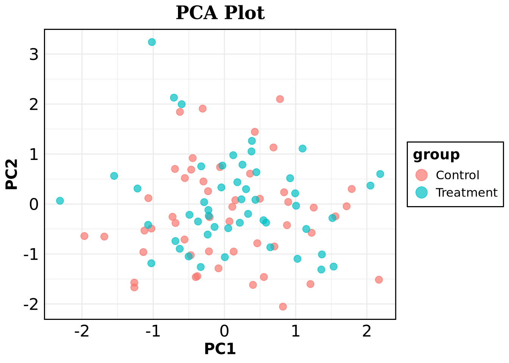
# Create volcano plot data
volcano_data <- data.frame(
log2FC = rnorm(1000, mean = 0, sd = 1),
pvalue = runif(1000, min = 1e-10, max = 1)
)
volcano_data$neg_log10_pval <- -log10(volcano_data$pvalue)
volcano_data$significant <- ifelse(volcano_data$neg_log10_pval > 2 & abs(volcano_data$log2FC) > 1, "Significant", "Not Significant")
# Volcano plot
ggplot(volcano_data, aes(x = log2FC, y = neg_log10_pval, color = significant)) +
geom_point(alpha = 0.6) +
scale_color_manual(values = c("Significant" = "red", "Not Significant" = "black")) +
labs(title = "Volcano Plot", x = "Log2 Fold Change", y = "-Log10(P-value)") +
theme_minimal() +
geom_vline(xintercept = c(-1, 1), linetype = "dashed", color = "gray") +
geom_hline(yintercept = 2, linetype = "dashed", color = "gray")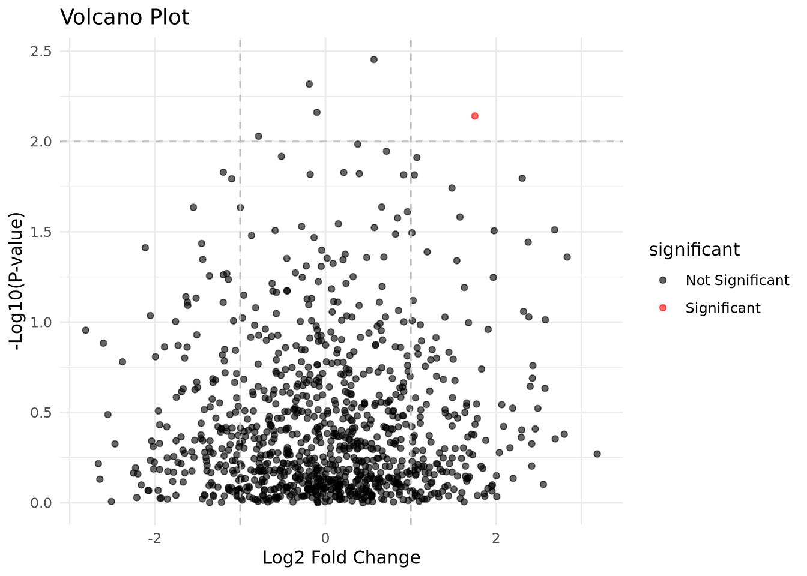
# Gene expression data across groups
gene_expr <- data.frame(
expression = c(rnorm(30, mean = 5), rnorm(30, mean = 7)),
group = factor(rep(c("Control", "Treatment"), each = 30))
)
# Box plot with jitter points
ggplot(gene_expr, aes(x = group, y = expression, fill = group)) +
geom_boxplot(outlier.shape = NA) +
geom_jitter(width = 0.2, alpha = 0.6, size = 2) +
scale_fill_manual(values = c("Control" = "#1f77b4", "Treatment" = "#ff7f0e")) +
labs(title = "Gene Expression by Group", x = "Group", y = "Expression Level") +
theme_minimal() +
theme(legend.position = "none")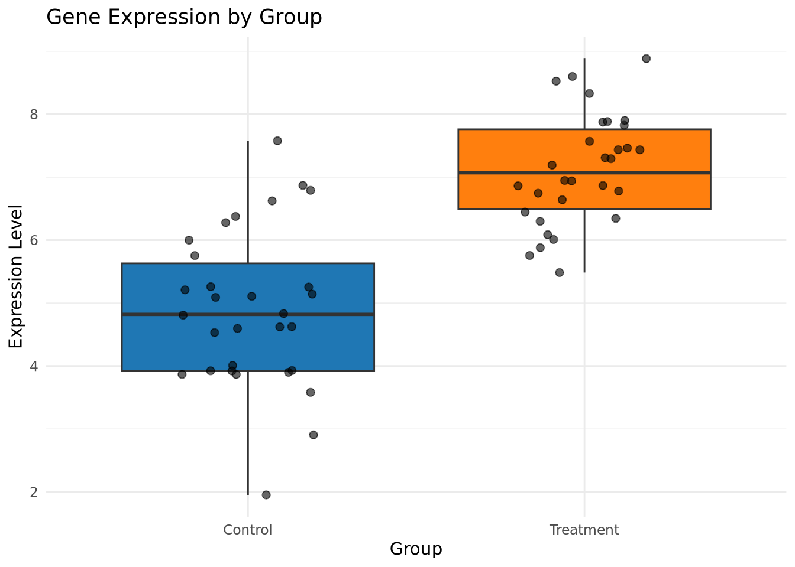
ggplot2 is a powerful and flexible R package for creating elegant data visualizations based on the Grammar of Graphics. This tutorial will guide you through the fundamentals of ggplot2, from basic plots to more advanced customizations.
The Grammar of Graphics, developed by Leland Wilkinson, provides a structured approach to describing and building statistical graphics. In ggplot2, every plot is composed of:
The basic structure of a ggplot2 plot follows this pattern:
# Basic ggplot2 structure
# ggplot(data = <DATA>) +
# <GEOM_FUNCTION>(
# mapping = aes(<MAPPINGS>)
# )Let’s start with a simple example using the built-in mtcars dataset:
# Simple scatter plot
ggplot(data = mtcars) +
geom_point(mapping = aes(x = wt, y = mpg))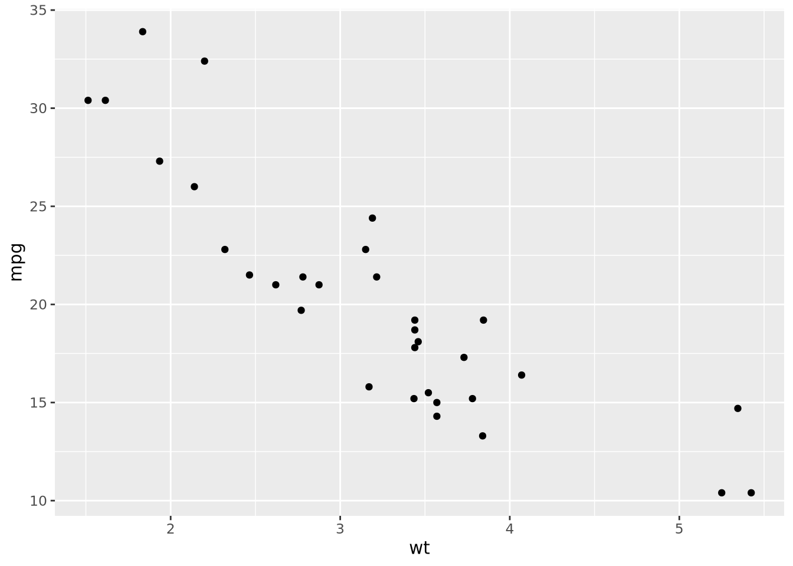
Aesthetics define how variables in your data are mapped to visual properties. Common aesthetics include:
x and y: Position on x and y axescolor/colour: Color of points, lines, or areasfill: Fill color for areassize: Size of points or areasalpha: Transparency (0 = fully transparent, 1 = fully opaque)shape: Shape of pointslinetype: Type of line (solid, dashed, etc.)# Scatter plot with color mapped to number of cylinders
ggplot(data = mtcars) +
geom_point(mapping = aes(x = wt, y = mpg, color = factor(cyl)))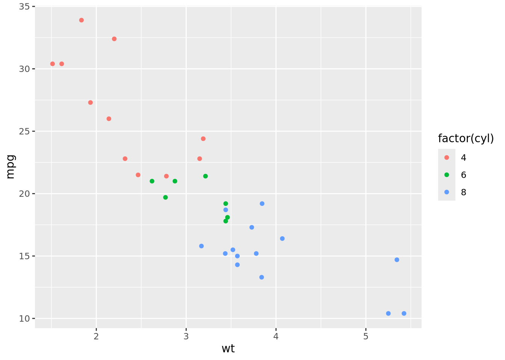
Note that we use factor(cyl) to treat cylinder count as a categorical variable rather than continuous.
Here are some of the most commonly used geometric objects:
geom_point)ggplot(mtcars, aes(x = wt, y = mpg)) +
geom_point()
geom_line)# Create time series data
time_data <- data.frame(
time = 1:10,
value = cumsum(rnorm(10))
)
ggplot(time_data, aes(x = time, y = value)) +
geom_line()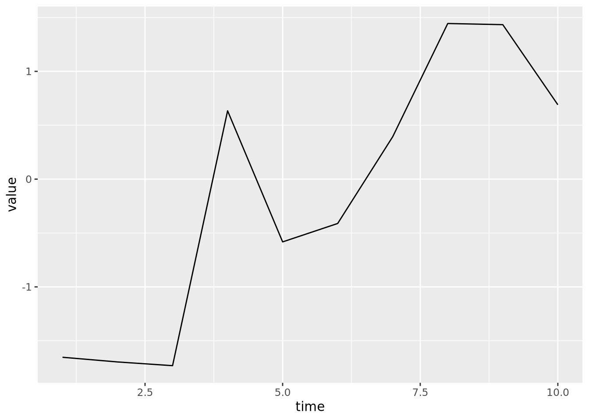
geom_bar and geom_col)# geom_bar counts occurrences
ggplot(mtcars, aes(x = factor(cyl))) +
geom_bar()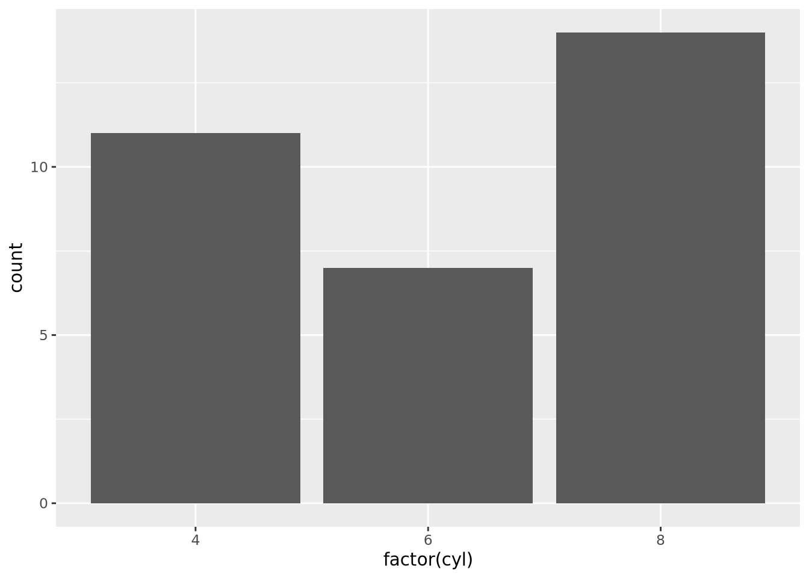
# geom_col uses values as heights
bar_data <- data.frame(
category = c("A", "B", "C"),
value = c(10, 15, 7)
)
ggplot(bar_data, aes(x = category, y = value)) +
geom_col()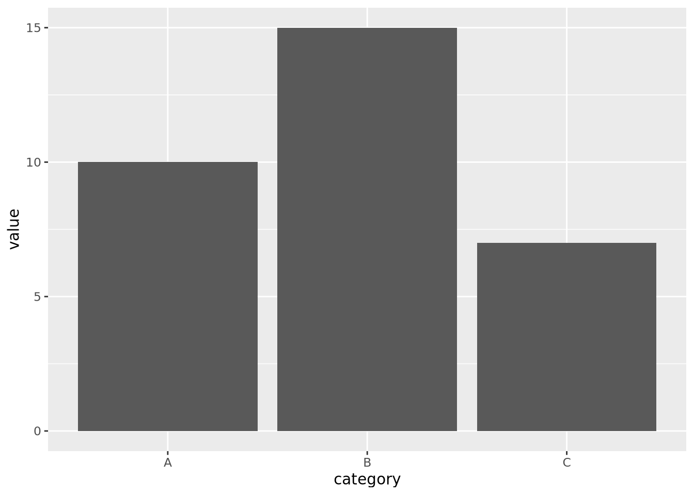
geom_histogram)ggplot(mtcars, aes(x = mpg)) +
geom_histogram(bins = 10)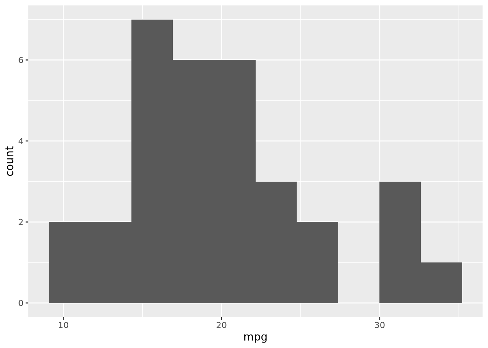
geom_boxplot)ggplot(mtcars, aes(x = factor(cyl), y = mpg)) +
geom_boxplot()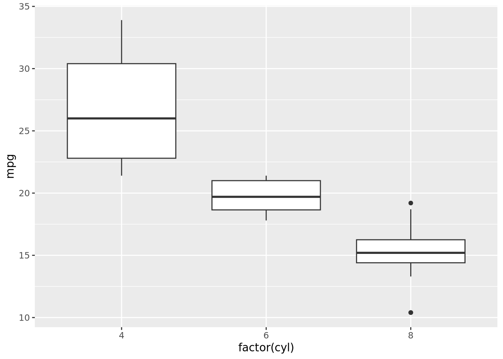
You can add multiple layers to a single plot:
ggplot(mtcars, aes(x = wt, y = mpg)) +
geom_point() +
geom_smooth(method = "lm", se = TRUE, color = "red")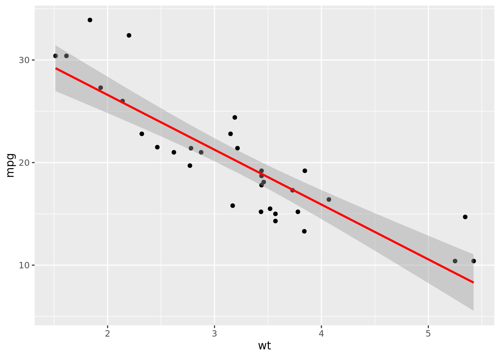
Faceting creates multiple plots based on one or more variables:
facet_wrap(): Wraps facets into a gridggplot(mtcars, aes(x = wt, y = mpg)) +
geom_point() +
facet_wrap(~ cyl)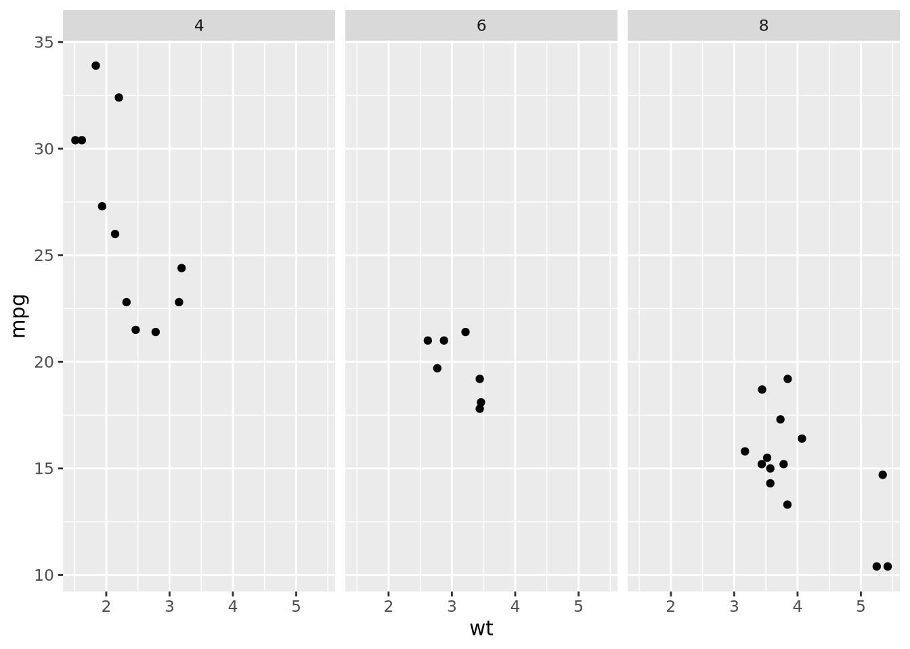
facet_grid(): Creates a grid of rows and columnsggplot(mtcars, aes(x = wt, y = mpg)) +
geom_point() +
facet_grid(vs ~ am)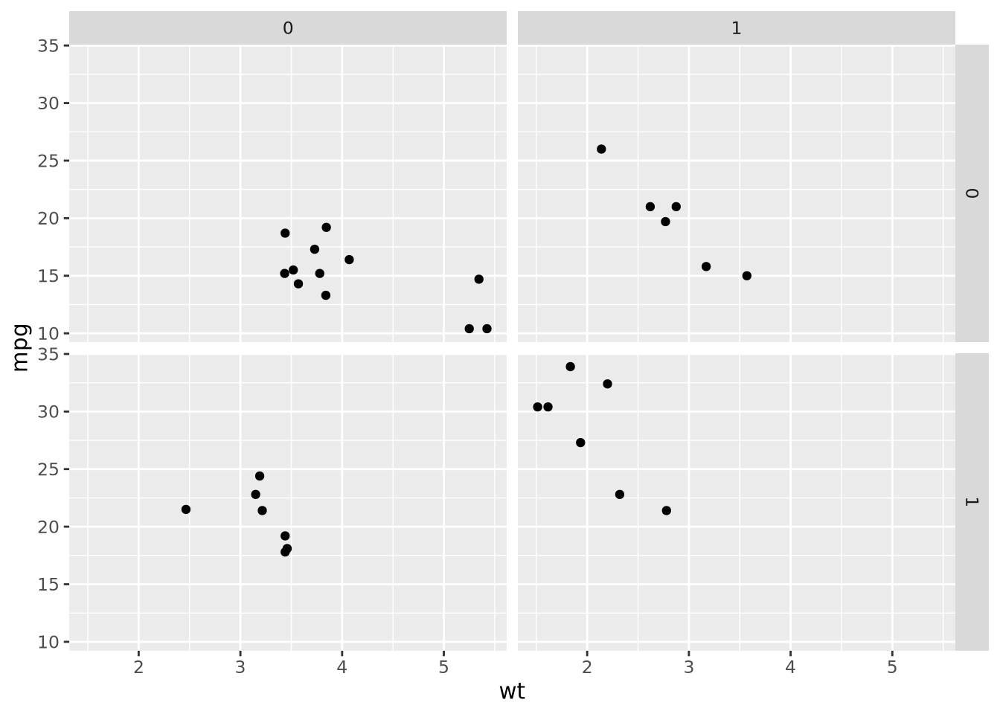
Customize how data maps to visual properties and add informative labels:
ggplot(mtcars, aes(x = wt, y = mpg, color = hp)) +
geom_point(size = 3) +
scale_color_gradient(low = "blue", high = "red") +
labs(
title = "Fuel Efficiency vs Weight",
subtitle = "Colored by Horsepower",
x = "Weight (1000 lbs)",
y = "Miles per Gallon",
color = "Horsepower"
)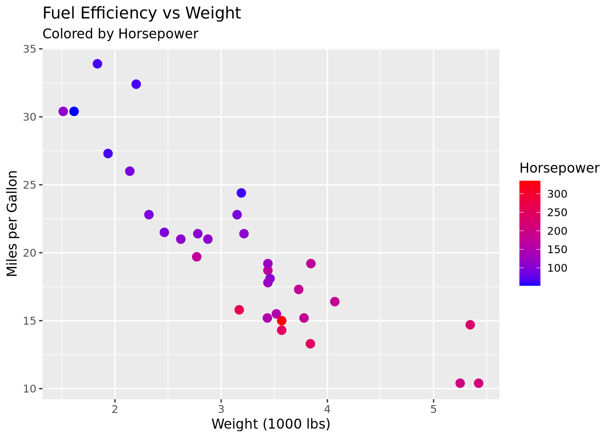
Themes control the non-data elements of your plot:
# Using built-in themes
p <- ggplot(mtcars, aes(x = wt, y = mpg)) +
geom_point()
# Different theme options
p + theme_bw()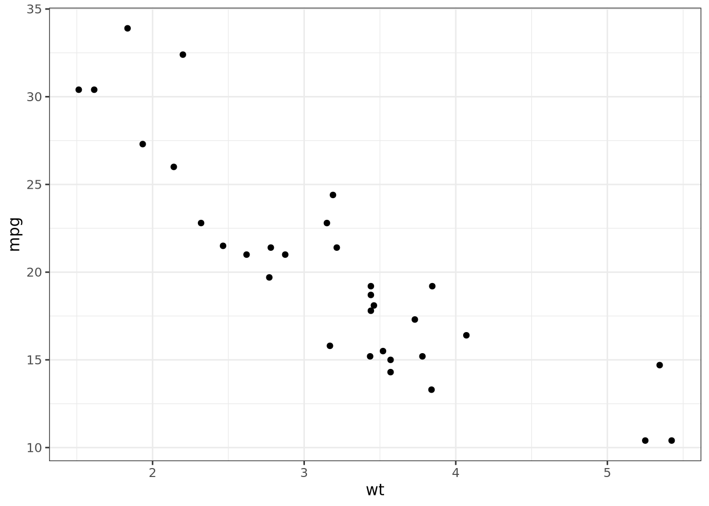
# Custom theme
p + theme_minimal() +
theme(
plot.title = element_text(size = 16, face = "bold"),
axis.title = element_text(size = 12),
panel.grid.minor = element_blank()
) +
labs(title = "Custom Styled Plot")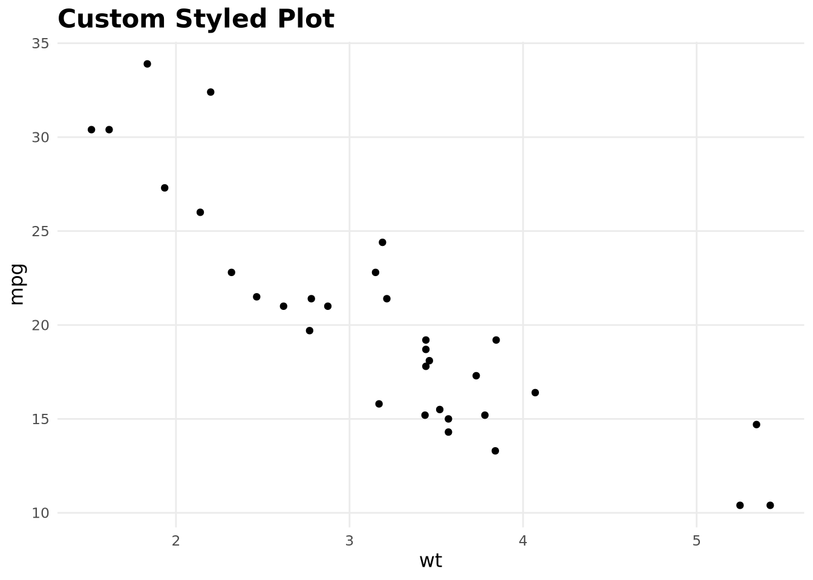
Save your plots to files:
p <- ggplot(mtcars, aes(x = wt, y = mpg)) + geom_point()
# Save as PNG
ggsave("my_plot.png", plot = p, width = 8, height = 6, dpi = 300)
# Save as PDF
ggsave("my_plot.pdf", plot = p, width = 8, height = 6)Let’s create a more complex, publication-ready plot:
# Create sample data
set.seed(123)
sample_data <- data.frame(
group = rep(c("Control", "Treatment"), each = 50),
time = rep(1:10, times = 10),
value = c(rnorm(50, mean = 5), rnorm(50, mean = 7)) +
rep(seq(0, 2, length.out = 10), times = 10)
)
# Create the plot
ggplot(sample_data, aes(x = time, y = value, color = group)) +
geom_line(aes(group = interaction(group, rep(1:5, each = 10))),
alpha = 0.3) +
geom_smooth(se = TRUE, method = "loess") +
scale_color_manual(values = c("Control" = "gray50", "Treatment" = "steelblue")) +
labs(
title = "Treatment Effect Over Time",
x = "Time (hours)",
y = "Response Value",
color = "Group"
) +
theme_minimal() +
theme(
plot.title = element_text(hjust = 0.5, size = 14, face = "bold"),
legend.position = "bottom"
)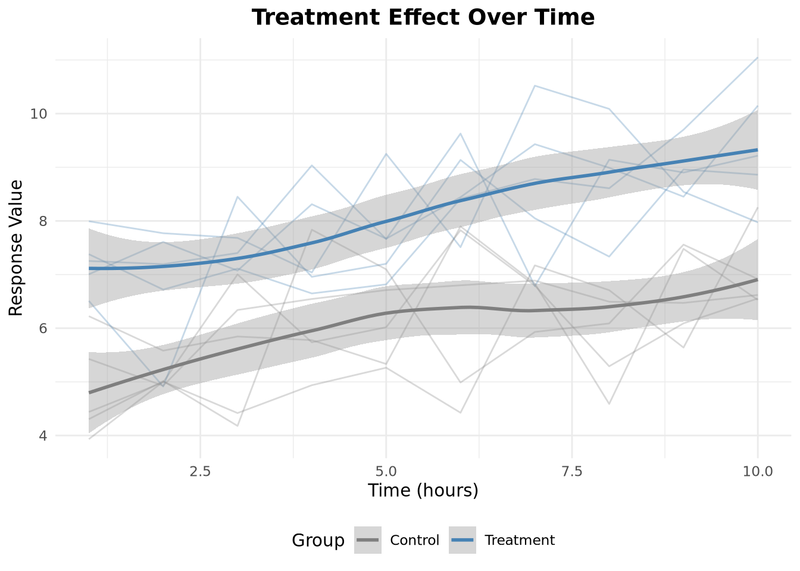
This tutorial covers the fundamentals of ggplot2. With practice, you’ll be able to create sophisticated and publication-quality visualizations for your data analysis projects.